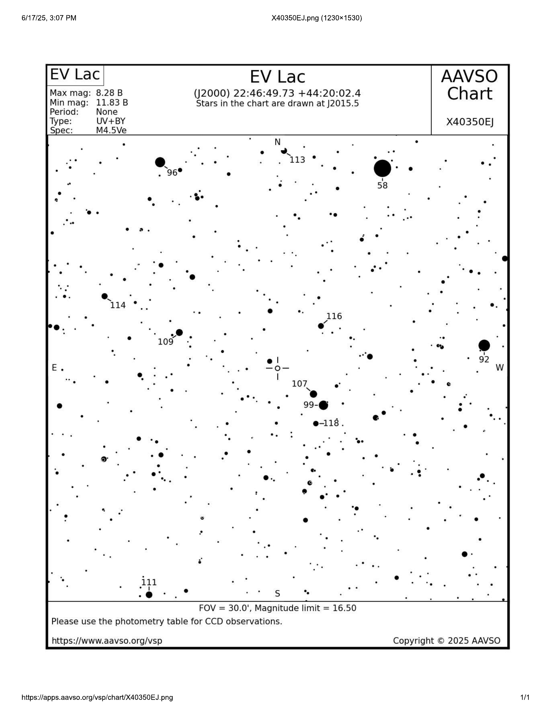

Overview
This project focuses on monitoring EV Lacertae for high‑energy stellar flares using time‑series photometry and building calibrated light curves to characterize flare amplitude and timescales.
- Objective: detect and measure flare events via differential photometry.
- Deliverables: observing log, reduced data products, light curves, and flare metrics.
Target: EV Lacertae
EV Lac is an active M‑dwarf (red dwarf) well‑known for frequent magnetic reconnection flares that produce rapid brightness spikes. It’s a prime laboratory for stellar activity studies and space‑weather analogs.

Placeholder — add
images/evlac/evlac-finder.png

Placeholder — add
evlac-overview.pngMethods
- Time‑series imaging with consistent cadence (exposure & interval tuned for flare capture).
- Calibration frames (bias/dark/flat) applied to all science images.
- Differential photometry using stable comparison stars in the same field.
Observation Log
- June 24, 2025 — EV Lac series
- June 25, 2025 — EV Lac series
- July 4, 2025 — EV Lac series
- July 6, 2025 — EV Lac series
Reduction & Photometry
- Bias, dark, and flat correction to remove sensor and optical system signatures.
- Astrometric alignment (optional if required), then aperture photometry per frame.
- Light curve constructed from target – comparison star magnitude differences.

Placeholder — add
images/evlac/pipeline.pngResults — Light Curves
Each panel auto‑shows your plot if a file with the suggested name exists. Otherwise you’ll see a placeholder.

Placeholder — add
images/evlac/lightcurve-2025-06-24.png
Placeholder — add
images/evlac/lightcurve-2025-06-25.png
Placeholder — add
images/evlac/lightcurve-2025-07-04.png
Placeholder — add
images/evlac/lightcurve-2025-07-06.pngDiscussion
- Light curves reveal rapid, impulsive brightening and decay consistent with magnetic reconnection flares.
- Future work: flare frequency distribution and energy estimates from integrated flux.
References
- Project slides (Ceballos): Photometric Observations of EV Lacertae’s Flare Activity — Porterville College / Astrophysics REU (advisor: M. Richmond).
- Background example: Boyd et al., JAAVSO, 2023 (light‑curve morphology for flares).